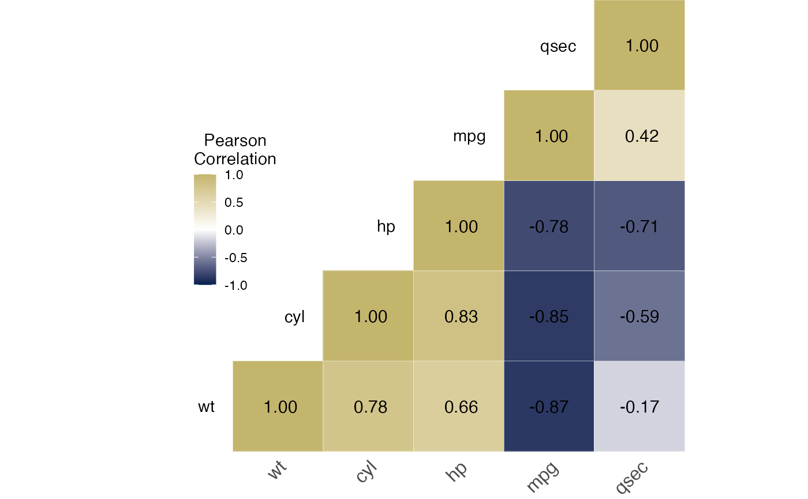
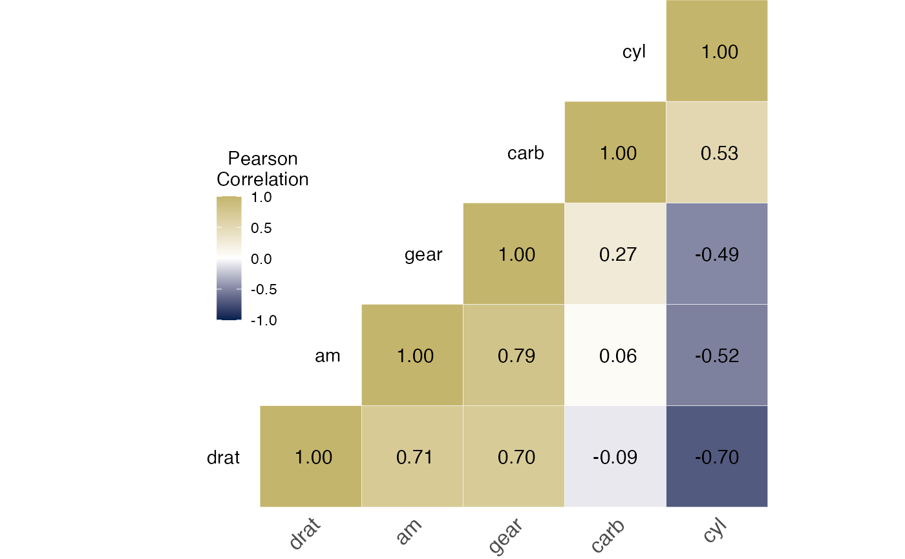
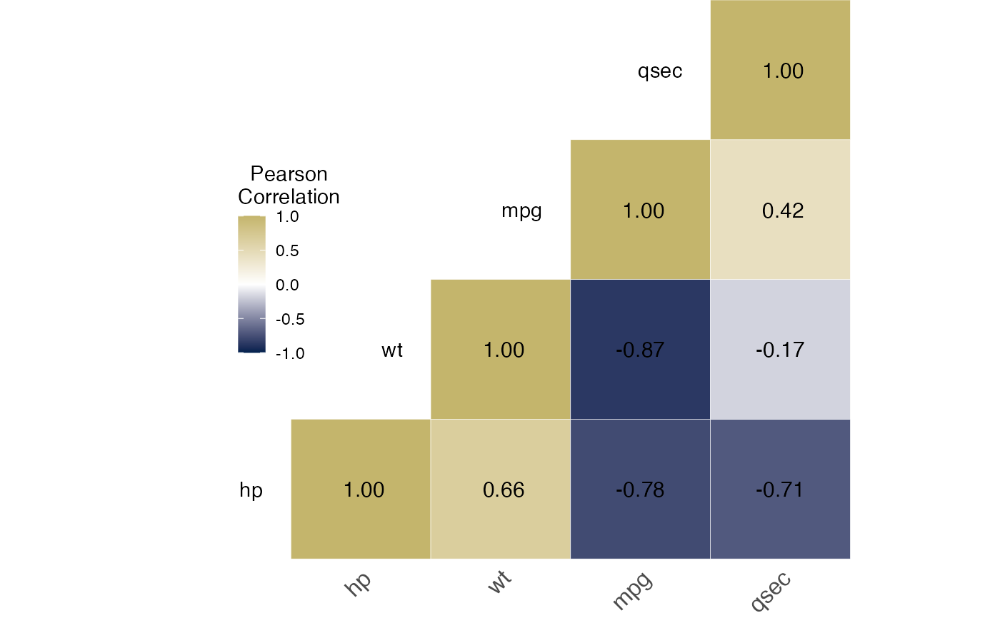
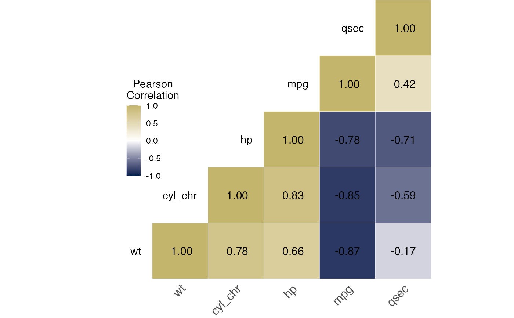

Performs pairwise Pearson or Spearman correlations.
corrmat( data, ..., method = "pearson", use = "pairwise.complete.obs", reorder = TRUE, digits = 2, legendpos = c(0.15, 0.35), cutpoints = c(-1, 0, 1), colors = c((viridis::viridis_pal(option = "cividis"))(10)[1], "white", (viridis::viridis_pal(option = "cividis"))(10)[8]) )
| data | Required. Data frame. Only numeric variables will be used; variables of other types will silently be dropped. To include categorical variables, coerce factors to numeric first. See examples. |
|---|---|
| ... | Optional. Variables to correlate. If not provided, all numeric variables will be used. Supports tidy evaluation; see examples. |
| method | Optional. Correlation method. Defaults to |
| use | How |
| reorder | Perform hierarchical clustering in the correlation matrix?
This will order variables by their correlation patterns with other variables.
If turned off to |
| digits | Decimal digits for displayed correlation coefficients. Defaults to |
| legendpos | (x, y) coordinates of color legend. Use
|
| cutpoints | Correlation coefficient values that have a distinct
color. Defaults to |
| colors | Colors for the |
ggplot. Can be modified with the usual ggplot commands, such as
theme.
# Can use tidy evaluation to select variables: mtcars %>% corrmat(contains("a"), starts_with("c"))# If "cyl" was a character, it would be excluded: mtcars %>% dplyr::mutate(cyl_chr = as.character(cyl)) %>% corrmat(mpg, cyl_chr, hp, wt, qsec)# To retain the character variable "cyl", # convert to factor and then make numeric: mtcars %>% dplyr::mutate(cyl_chr = as.character(cyl), cyl_chr = as.numeric(factor(cyl_chr))) %>% corrmat(mpg, cyl_chr, hp, wt, qsec)